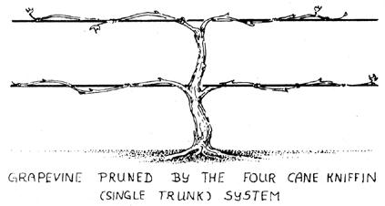
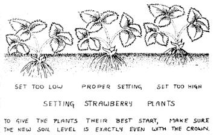
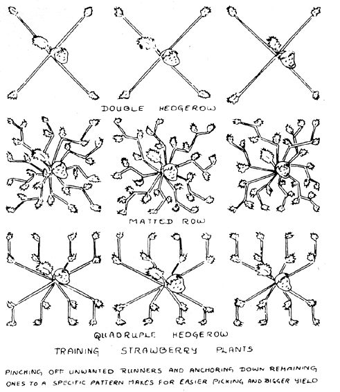

Grow It!
March/April 1973
berries
SPECIAL NOTE: GROW IT! is a big book and even if a chunk this size were to be run in issue after issue after issue of MOTHER, it would take over two years to put the complete volume in your hands. If you haven't got two years to play around with, we recommend that you truck on down to your nearest book store and shell out $8.95 for your very own copy of GROW IT ! That way, Richard Langer will be happy, Saturday Review Press will be happy . . . and we're betting that you'll be happy too. It's a darn good book.
EXTRA SPECIAL NOTE: All material here reprinted from GROW IT! Copyright © 1972 by Richard W. Langer.
At last! For the first time since the HAVE-MORE Plan was published way back in the 1940's, a fellow named Richard W. Langer has come up with a 365-page book that really introduces a beginner to small-scale farming. Wanna raise your own fruit, nuts, berries, vegetables, grain, chickens, pigs, ducks, geese and honeybees? GROW IT ! tells you how to get started, we like it, and here's another chapter from the book.
If ever I dies an' yo ain't certain I's dead,
Just butter some biscuit an' new made bread
An' spread em all over with raspberry jam,
Then step mighty softly to whar 1 am
An' wave dem vittles above my head,
If my mouf don't open, I'm certainly dead.
-Monroe Sprowl
One of the tastiest spots on your farm is the berry patch. Of course, it won't have just berries in it. Strawberries, raspberries, and blackberries, their names notwithstanding, aren't berries at all in the botanical sense. Grapes and currants, on the other hand, are just to balance things out, some with "berries" as part of their names really are berries-blueberries, cranberries, and gooseberries, for instance. Which somehow explains why they're all grouped together here, and certainly in no way detracts from their flavor.
BLUEBERRIES
To add further to the confusion of nomenclature, if you've ever had huckleberry pie, or picked wild huckleberries in the woods on a camping trip, chances are you didn't. Blueberries have small, soft, almost invisible seeds. Huckleberries have approximately ten big, stone-hard seeds. Eating real huckleberry pie is rather like chewing on a clam full of sand.
Blueberries are fussy about their growing conditions, requiring not only loose, acid soil, but a shallow water table and, at the same time, room for their sensitive roots to stay dry. They're very winterhardy, however, making an excellent crop for the Alaskan homesteader. Not only do they like a cold winter-even the blossoms will withstand a 10° F. frost-but the cold is essential for most of the varieties to bear fruit. Thus as a rule they cannot be cultivated in regions where the temperature never goes down to freezing. However, minor species such as the Florida Evergreen, Rabbiteye, and Dryland will grow without the cold, and sometimes in the more arid regions. They're worth an experiment if your land is down South.
PROPAGATION
Wild blueberries were probably spread from area to area by seeds in the droppings of birds and foxes. But don't sit around waiting for your local red-winged blackbird's help. A full-sized natural blueberry patch from seed is estimated variously to take between fifty and a hundred and fifty years. For best results on your farm, buy established blueberry plants grown from cuttings. Later you can multiply these by layering. But for the first few years your already started bushes will II give you better berries, and sooner.
LOCATION
Full sun is what blueberries like best, as long as ground moisture is sufficient. If you have a swamp, blueberry bushes may be put to good land use there, but only on hummocks at least eight inches above the high-water mark. They love water, but their fine roots drown easily. The large quantities of acidic humus often found in swamps make excellent ground for blueberries because they provide the loose, open soil needed and often approximate the ideal pH of 4.5. If you have friable, well-drained soil in the garden, the plants can be successfully grown there as long as you work in lots of acid soil-builders such as pine and fir sawdust, oak leaves, or acidic peat moss several times during the year preceding planting. The pH must pH also be kept at 4.5 after planting.
PLANTING
Since you don't want to wait a decade for those blueberries, order three-year-old stock if you can. That's about the maximum age blueberries can be transplanted without a major shock, due to the extensive root system they develop. They give their first decent crop at around seven years. By buying three-year-olds, you'll have at least a small harvest after two years, and a full one of between ten and fifteen quarts not too long after that. Threeyear-old stock will be sixteen- to twenty-four-inch bushes. Buying two separate species is suggested. Most blueberries are selfsterile, so cross-pollination is necessary for your crop.
You'll probably want to start the blueberry patch in early spring. Fall planting can be done in warmer climates, but in that case make sure you provide a very heavy winter mulch. Space the young stock with eight feet between them in rows eight feet apart. Dig up a three-foot circle for each plant and return to the hole a mixture of half soil and half acidic compost. Trim back the branches so they spread out no more than the roots do. Check that the roots have plenty of depth when planted.
MULCHING
Mulch when planting the first year with four inches of pine or fir sawdust that has been composted. If the ground is naturally acid, straw will do. The mulch should be renewed each year in spring, always extending the circle about one foot farther out than the widest branches.
PRUNING
Blueberries are quite prolific, and the new improved varieties are prone to overbearing. Too much fruit, particularly in the early years, can sap vital growing strength from the plant itself. For this reason some of the blossoms are usually trimmed off. If you have the patience to wait an extra year for berries, it's a good idea to trim all the blossoms off the fourth year, or, in other words, the first year for a three-year-old transplant. In subsequent years you'll probably want to trim off about a fourth of the blossoms. Just dip each blossom cluster, not the whole branch. One set of flowers left for every three or four inches is good spacing. They will become clusters of fruit, and you won't want to crowd them.
Suckers (straight shoots from the base of the plant) will develop, possibly even the first year after transplanting. For the first couple of years they should be pruned back to the base. Unless, of course, part of the main plant died in transplant, in which case trim away the dead wood and leave one vigorous sucker. When the plant is six years old, let up to four new suckers develop as part of the bush, but trim away some of the older branches that are bearing poorly. You don't want plant growth to stunt berry production at this stage. A good way to remember which branches are the unfruitful ones is to bend some colored plastic-covered wire around them while harvesting.
HARVESTING
The reason store-bought blueberries often have little more flavor than cotton is that they are picked as soon as they blue out, when they are still hard and easy to ship. Wait another week after blueing out to pick yours. This means you'll have to harvest them by hand, since a blueberry rake will gather the unripe with the ripe and may also bruise the soft, fully ripened ones. Take a berry on the bush between two fingers and twist lightly-if it falls off, it's ripe; if you have to tug for it, it's not ripe yet, no matter how blue it is.
BRAMBLE FRUIT
In the brier-patch category you'll find red raspberries, black raspberries, purple raspberries, yellow raspberries, and blackberries, including the dewberry, young, boysenberry, and loganberry. Take your pick. Personally, I would also include the wild rose, since the rose hips found on this bramble bush make excellent and highly nutritious eating-just remember to remove the hairy seeds, either with your fingers if you're eating fresh-picked ones, or by straining if you're making jelly or fruit soup.
THE WILD BRIER PATCH
In many areas of the country you'll find a bramble patch of native American blackberries or raspberries already growing on the farm. The problem then is to get a bit of organization into the thing. By hacking away large parts of the thicket you will be increasing the yield. What you want to do is clear paths through the patch so you can not only get at the berries, but prune and fertilize the bushes as well. You could, of course, try to organize the brambles into rows like a regular berry planting. For the average brier patch, however, it's better simply to make a cross through the middle with two paths five or six feet wide. This right away eliminates most of the center dead wood.
Remember to wear gloves and clothing that can stand up to the thorns when you tackle the job. Map out your projected cutting lanes with string or you'll have nothing but problems. Cut the plants on the path right down to the ground. Then dig up the roadbed and turn the soil. Those bramble-roots are going to be stubbornly anchored, so you'll have quite a job on your hands, but it will save a lot of digging later. Brambles are hardy as hell if you're trying to get rid of them. Cut to the ground and you'll have sprouts again next year. If in spite of your rooting job sprouts do come up in the paths later, be sure to dig them out promptly.
After you've cleared a central crossroads through the patch, you'll probably want to trim some of its outer edges as well to keep the rest of the canes in harvesting reach. The remaining canes, what's left of your patch, should then be cut back to four feet, with all dead canes being removed entirely, for more and better berries.
Now, having gotten the wild patch hopefully tamed and under control, give it a good dose of compost. A nitrogen-rich organic fertilizer will give it an extra boost with that first post-pruning crop. Mulching the plants fully will help retain moisture in the ground, previously shaded from the evaporative forces of direct sunlight.
PROPAGATION
If you don't have a wild brier patch around to convert into an instant berry garden, you'll probably have to get your initial stock from the nursery. You may want to do this anyway, since the varieties available today bear much larger fruit, including such novelties as the big, tasty amber and yellow raspberries. Buying from a nursery also permits you to get several varieties of one species, assuring a better crop through cross-pollination.
Buy the best two-year-old certified disease-free stock available and, unless you have plenty of space, stick with either red raspberries by themselves or with any combination of the other brambles. Red raspberries shouldn't be grown near any of the others, especially the black varieties, which are disease-prone and catch everything the red ones may be able to shake off lightly.
About 75 percent of your plants will take, and twenty-five bramble bushes will yield between fifty and a hundred quarts at maturity, which should give you an idea of how many you will need. If you're having plants shipped by mail rather than purchasing them from a local nursery, their point of origin should be in your approximate latitude or have roughly equivalent temperature conditions. Were you to get your plants from a region much farther south than your homestead, their stage of growth would be too advanced and they would have a tendency, particularly the blackberries, to produce a lot of spindly canes rather than a more limited number of strong ones.
There are two types of bramble berry plants to choose from, the bush and the trailing varieties. Bush berries are hardier and easier to care for. Trailing varieties are more cold-sensitive on the one hand, more drought-resistant on the other. They can be trained on supporting trellises to make for easier picking-both for you and the birds.
The propagation of cane fruits is quite simple once you have a few roots and canes around. You can start a new plant with a root cutting from an old one. In the fall simply take a four-inch section of root about half an inch in diameter and bury it under two inches of sandy loam in a tray. Keep the tray in a cold frame if the winter temperatures do not go much below 30° F., in a cool, light spot indoors if they do. By spring the root piece will have sprouted. Presto, a new plant.
Be sure to mulch it heavily its first winter outdoors. This is a fine way to extend your berry patch in a hurry.
Layering is another way. Let a few canes grow without pruning one year. By the end of the summer they'll be dipping down to the ground in a rattail fashion, with only minor leaf development along the tip. Anchor the tail with a split peg. Bramble plants take to layering so easily you don't even have to make the bark slit as with hazelnuts. Cover the part touching the ground with two inches of soil, making sure the leafy tip remains exposed. Come spring, cut the cane about ten inches from the anchor to sever from the parent plant. A new plant is all set to grow.
LOCATION
The best soil for bramble fruits is deep, sandy loam rich in organic matter. The plants will grow in sandy soil low in organic content, but the fruit will be small and seedy. Since the berries develop during what is usually the driest part of the year, the ability of the soil to retain moisture is a key to their quality. But any sandy soil can be built up with compost and mulching to induce a good harvest. Proper drainage is, as usual, central to success. Even claylike soils, with good drainage, on a slope, say, can foster excellent fruit if sufficient organic matter is incorporated for survival of the plant's hair roots. The bramble root system usually penetrates to the two- to three-foot level, so incorporate organic matter as deeply as possible before planting. A pH of 6 is preferred.
The raspberry in particular suffers from weak crowns. That is, the canes are attached to the crown (the point at which they emerge from the ground) in such a manner that they break off readily, especially when subjected to strong winds. For this reason raspberries should not be planted on an open, unprotected field, but rather at the edges where sunlight is profuse while wind effects are moderated.
Gently sloping ground is best. Choose a hillside that faces south, if possible, to give the bramble berries continuous summer sun all day long. If you're planning on several rows, contouring is essential to soil preservation. It might seem a good idea to plant alternate rows of red and black berries so you can conveniently pick both, but don't forget this would probably wipe out the black ones before they could even bear. Keep them apart-at least five hundred feet to be safe. Also, don't set out new plants in the vicinity of wild ones, again for reasons of disease prevention, nor, for the same reason, where potatoes, tomatoes, eggplant, or melons have grown in the past three years.
PLANTING
Bramble fruits are planted as early in spring as possible to give new growth time to strengthen sufficiently for wintering. The only exception is in the South, where the soil is warm enough for the roots to establish themselves in wintertime. The plants should be set out as soon as they arrive. Once leaves appear, the chances of success become much slimmer and the probability of disease increases immensely.
If your bramble plants are shipped to you rather than being toted home from a local nursery, the first thing to do upon their arrival is to make certain the roots are moist. Most shipments will arrive with the root systems packed in sphagnum moss and enclosed in plastic. Moisten if necessary and keep the plants in the shade until you get them into the soil.
Bramble rows should be spaced eight feet apart, with the plants three or four feet apart in the rows. Dig a hole for each plant one and a half feet wide by twice the depth of the root system. Fill the bottom half of the hole with well-aged compost. Each stem should be set with the soil level no higher than it was at the nursery. Spread the roots well before covering.
Settle the plants in with a heavy dousing of water. This will make them sink down so that they are below the general soil level. That's fine. The important thing is that the level around the plant itself be no higher or lower than it was before transplanting. If your soil drains poorly, it will pay you to ridge it so the whole row of plants stands slightly higher than the surrounding ground. Last but not least, trim all the canes back to eight inches.
MULCHING
The best way to maintain the moisture and humus content in your bramble patch is with a one-foot layer of straw mulch, which should be replenished yearly. Even so, if you are in a dry area, give the plants a good dousing of water just as the berries begin to form, for an extra boost. It's a good idea to mulch with six inches of used livestock bedding first and six inches of plain straw on top. Whatever you mulch with, don't bring it closer to the canes than six inches-to keep field mice in their place.
Nitrogen is also important to the bushes in fruiting. The addition of tankage or dried blood to the soil before mulching will supply large quantites of nitrogen. Two good handfuls spread around the base of each bearing bush once a year is about right.
PRUNING
The first thing to remember about raspberries and blackberries is that their canes are biennial. That is to say, the first year's growth does just that, it grows, producing no fruit. The second year these canes fruit. Meanwhile new canes are growing for the following year's crop. The old canes must be pruned off after harvesting, since they will not bear again. Without pruning, the yield of large berries will be decreased.
Pruning for the raspberries and the blackberries is about the same. For both, "heading back" is done very early in spring before any new growth begins. The number of young canes, those that grew the previous year to bear the current year, should be reduced to eight, or at most ten, the larger number for red raspberries. Cut off weak canes, and try for somewhat even distribution. Lopsided bushes make fewer berries. The remaining canes should be trimmed back to between four and six feet, according to how your particular bush bears. If it tends to carry its fruit close to the tips, the pruning must be moderate; if it carries fruit midway on the canes, the pruning is more severe, and so on. The purpose of this pruning is to reduce the number of berries borne, in turn increasing the size of the ones produced. You'll also want to prune the laterals sprouting from the main canes back to eight inches.
A post-harvest pruning removes all the branches that have borne fruit and, having borne once, will bear no more. The canes, being biennial, usually will die back anyhow. Your job is to cut them beforehand, so the plant doesn't expend useless energy on them. This also helps prevent the spreading of any disease. Trim the canes off at ground level; leaving a few inches of stubble invites rot and other problems.
In addition to the regular spring and post-harvest pruning, black raspberries must be kept in check through early summer. The reds you can leave alone. As a black raspberry bush develops new canes for the following year's fruit, these canes should have their tip buds cut whenever they reach the two- to two- and-a-half-foot length, to keep them short. This cutting, again, is to coax bigger berries from the plant. It will also make your picking easier the next year.
Another harvesting aid is tying each plant to a pole or, if you have a whole row of them, stretching parallel wires from poles at both ends of the row so the plants are enclosed between them. This will give you a neat hedge that doesn't constantly ensnare you in briery tentacles.
Trailing vines, of course, may be trained up trellises as they grow. The question on the small farm is whether this is worth all the extra time and effort. Pruning you have to do, but staking and training you may well want to let go till future years when you aren't quite so busy getting the place started.
PROBLEMS
Well-mulched, pruned raspberries and blackberries should give you no trouble if grown from healthy rootstock. Just remember to keep the raspberry reds and the rest away from each other. In part this is a preventative measure against anthracnose, a fungus disease characterized by rough gray and black blotches on the canes. Trim off affected canes as soon as you see those telltale blotches. As with all diseased prunings, they should be burned in a hot fire. The same holds true for spur blight, manifested by reddish-orange to purplish-gray spots at bud junctions, or spurs. More drastic measures must be taken with raspberry mosaic, in which the leaves curl and turn a mottled yellow-red. Dig out the affected plant and destroy it. Raspberry mosaic usually strikes when the rest of your bushes are a healthy green, so you shouldn't have much trouble diagnosing it. In fall, of course, all plant leaves are bound to curl and turn color. Don't dig these plants out in a fever of doctoritis!
HARVESTING
Blackberries ripen black, but they're not ripe just because they've turned black. A ripe berry will fall into your hand after the lightest tug with two fingers, one on each side of the stem. Usually this is three to four days after they've turned black.
Raspberries are soft when they're ripe. You'll even learn to sniff out when a bush is ready for the berry pail. Harvest daily; they ripen quickly. If it rains during berry-picking season, make sure to get all the ripe ones right afterwards, or they will mold. Any moldy berries you find should be culled out; mold ripens even more quickly than your fruit.
CURRANTS AND GOOSEBERRIES
The Ribes family are hardier than almost all other fruit-bearing plants, which explains the popularity of these easy-to-grow bushes in northern Europe, where fresh fruit is often hard to come by. In America, on the other hand, the Ribes are not very popular. Which is unfortunate, because sun-ripened currants and gooseberries are fabulous.
Part of their sad lack of popularity in this country stems from the fact that the berries don't lend themselves too well to machine picking and the ripe fruit is hard to ship. Another reason is that the family is an alternate host for white pine blister rust and should not be planted near these trees; thus there are strict limitations on interstate shipping of Ribes in some areas.
But the first reason is a strictly commercial one, and the second can be easily taken into consideration unless your spread is very small. So why not some good Ribes?
PROPAGATION
Both currants and gooseberries can be propagated from cuttings. Currants take root a little more readily than gooseberries. For your initial order, particularly of gooseberries, the plants should be American varieties. European ones, the subject of more intensive breeding and care, give bigger yields, but there is often some difficulty getting them to take well here. Still, if your nursery stocks them, a few imported bushes are definitely worth trying too.
Gooseberries come in red, yellow, and green varieties. The green are actually a translucent white when ripe. The red are the sweetest. Personally, I prefer the green; they're the most tart, and make refreshing summer eating. Currants come in various shades of red, black, and white. Grow some of each. Incidentally, currants make the world's best homemade wine.
For gooseberries, order well-rooted one-year-old stock. Two-year-old stock is even better, but if you buy these you have to make sure you're dealing with a good nursery-which actually you should do in any case. Quick-buck operators will sell all their good stock as first-year plants, culling the others to let them grow to second-year plants. You get two-year-old stock, all right, but the worst of the lot. The same holds true for currants, although these, being sturdier, are likely to fare better as two-year-olds than the gooseberries.
LOCATION
Gooseberries and currants both prefer a heavy, even clay soil to a loose, sandy one. This is particularly true in more southern areas, where the heat retention properties of sandy soil can seriously impair the plant growth. Their roots are spreading, but quite near the surface, which intensifies the heat problem. On the other hand, this shallow root structure also permits the bushes to be grown in areas of too much ground moisture for other fruit plants, as long as drainage for the top six inches of soil is good.
Both plants have the added advantage of doing well on locations too windy for other berries, such as hilltops. In fact, areas exposed to a fair amount of wind are better for them, because good wind prevents mildew, an otherwise common problem, with gooseberries in particular. The bushes are so windhardy that they are often planted as a windbreak for other plants on an exposed side of a garden. Northern light is preferred.
Currants and gooseberries may also be planted in areas of partial shade where other fruit plants will not bear. This is an especially good idea in areas of hot summers where the tender surface roots might otherwise be scorched. Remember the mildew problem, however; the gooseberries will need good air drainage along with their shade.
One absolutely crucial factor is the location of any stands of pine, yours or your neighbors. Never plant these bushes within a minimum of a thousand feet from any type of pine tree. White pine blister rust cannot spread from pine to pine, but put currants or gooseberry bushes together with white pines, and you risk not only wiping out the entire white pine population, but even affecting other varieties of pine. However, the spores cannot be wind-carried more than a thousand feet, hence the spacing rule, which, if followed, will adequately protect the local pines.
The soil for currants and gooseberries should have a pH in the vicinity of 7. Plenty of compost boosts yields. Lots of potash should be used, and some nitrogen, but not too much or you'll end up with more leaves than fruit. Therefore don't use chicken or rabbit manure; other types are fine.
PLANTING
Currants and gooseberries are very early spring bloomers.
It's pretty hard to beat them to the gun. No matter how early in spring you try to plant them, you'll disturb the incipient flowers, so plant in fall instead. They lose their leaves and enter the dormant stage in early autumn, and thus the root system is given plenty of time to develop before winter's severity overtakes the land. Bushes five feet apart make a good planting layout, except for black currants, which are larger than the others. They're usually spaced seven feet apart instead.
Plant in soil that has been well mixed with potash-rich compost, including wood ash and bone meal, setting the stock slightly lower than they were in the nursery. If the roots seem dry, moisten them down before planting, although they're better off, of course, if not allowed to dry out in the first place. Trim off any broken roots. Pack the soil down fairly tightly around each plant. Trim all branches longer than ten inches.
MULCHING
Give the transplant plenty of surrounding mulch except for the field-mice circle of six inches' radius or so that you leave free where the plant breaks ground. The mulch must cover an area sufficient to protect the spread-out, shallow root system. A four-foot doughnut of it around each bush is good. Enlarge the doughnut as the plant grows.
PRUNING
The best time for pruning is early winter. First trim off weak branches and those lying close to the ground. In Europe gooseberries are sometimes shaped to form small trees eventually. This can often be done to good advantage, although the method is rarely used in America. Try it on one of your sturdier bushes and match the yield against the bush-pruned ones. In any case, gooseberry bushes should always be trimmed so there is an open space toward the top, where they sometimes tend to develop a tight head. The breathing space aids in mildew prevention.
Currants and gooseberries bear most profusely on their second- and third-year growth. Once your bushes are established, make a habit of trimming off all the four-year-old wood among the branches - you'll recognize it by its thickness. Remember to trim old branches all the way back to the ground. On a mature bush you want to leave four branches from each previous year's growth, except for a black currant, whose two-year-old wood should predominate. All these branches will have laterals of varying lengths. The laterals should not be cut back unless they've been injured. Trim for symmetry and you'll be trimming for best yield. All snippings, particularly those that don't look healthy, should be burned immediately. Never let them lie in the mulch.
PROBLEMS
White pine blister rust should be no problem if you plant your bushes the appropriate distance-a thousand feet or more-from any white pines in the area. The same type of anthracnose that affects the other cane fruits may affect currants and gooseberries; it is treated the same way as for the bramble bushes. Cane borers can be a nuisance. A cane that wilts early toward its tip is probably infested with them. Cut back until you find the culprits, and burn the whole cutting.
HARVESTING
The harvesting season for currants extends over a month or more. If you want them for jelly, do your berry-picking before they're quite ripe because the pectin content is higher then.
Ripe ones for eating are, of course, picked much sweeter. Harvest currants in clusters, like grapes. Don't try to strip off the individual berries by the handful or you'll end up with pulp in your hands.
Gooseberries ripen almost a bushelful at a time, which is convenient. You'll have to harvest only a couple of times in season, and once you've tackled this thorny job you'll be glad the ripening span isn't as long as that for currants. Some pickers don heavy canvas gloves and strip a whole branch at a time. This works fine on the greener berries wanted for gooseberry jam, provided you don't mind some pulpy squashed berries.
GRAPES
Grapes will grow in almost all temperate and many subtropical regions. European grapes can really be cultivated only in California and Arizona; the native American varieties, on the other hand, will probably thrive wherever you do. And well worth cultivating they are. Although I've never found grapes to rival some morning-chilled ones I picked south of Herat, Afghanistan-which certainly must vie with the ambrosia of the gods-almost any grape is a delight to the palate.
The three major species of grapes grown in America are the Vitis labrusca, an eastern variety of slip-skinned grape typified by the Concord, which is also grown in the west central region; the V rotundifolia , a southern grape whose name rhymes with magnolia, typified by the muscadines, scuppernong, for instance; and V. vinifera , the European wine grape grown almost exclusively on the West Coast, typified by the emperor and Johannisberger Riesling.
For a permanent contribution to the world around you, grapevines are a good start. A well-tended arbor will outlive you by many years, giving pleasure to all. And for a personal experience that's hard to beat, take a couple of real friends, a wheel of homemade goat cheese, your own fresh-baked wholewheat bread, and a bottle of wine from last year's crop out to the sun-drenched, fragrant arbor in grape-picking season and harvest the morning away.
PROPAGATION
Grapevines are usually propagated from cuttings or by layering. Southern muscadines are a little more difficult than other species. Whichever you choose, for your initial planting you should purchase one-year-old stock, from a local nursery, if possible, to assure easiest acclimatization. Surprisingly enough, a year-old vine with a good root system will fruit as quickly as a two-year-old transplant. What you are looking for is not length of the roots, but their number. You want a good, solid, bushy root system.
LOCATION
Grapes prefer very well-drained, warm soil rich in organic matter, and plenty of sun and air circulation. For these reasons they are often grown on hillsides, particularly those with southern exposure. If you have a sunny hillside, fine. If not, you can put your grapes on the south side of the house. But don't train grapes up the walls like ivy; this would increase the likelihood of early spring frost damage.
Open arbors are ideal. Face the open ends so that the prevailing winds run through the arbor, not up against it. In some areas arbors are used as summer shelters for tractors and other farm equipment. They suit the purpose, but I'd rather have the outdoors dining room. Although grapevines grow rapidly, you won't need to build an arbor for them until your second or third year. You will, however, have to stake out the plants with the future arbor in mind.
PLANTING
The best pH for grapes is 6 to 7, or almost neutral soil. Plant in the spring, but plow or dig up the land deeply the previous fall if possible. A cover crop of rye turned under before setting out the vines is an excellent way to boost the organic matter in the soil. Follow the rye crop with ground rock phosphate and granite rock or green sand spread liberally over the whole area to be used. If your soil is too acid, limestone will be needed as well.
For an arbor, plant the grapevines six to eight feet apart. For vines to be trellis-trained, ten or twelve feet is often better spacing if you have the room. You may think your young vineyard looks a bit sparsely settled at first, but two prolific vines have been known to cover a twenty-four-foot arbor all by themselves.
Pruning back grapevine roots to seven inches encourages the development of feeder roots. If you look carefully, you'll notice the vines seem to have a double set of roots: those just about at the soil line and a second pseudo-crown that spreads out below. The top ones are feeder roots; they run quite close to the surface, like those of your cane fruits. The second group of roots go quite deep, some to eight or ten feet. By forcing the development of the feeder roots and using rich compost and mulch, your plants are given a much better start. If there seems to be just one layer of roots to a vine, don't worry; in some cases it's very difficult to distinguish between the two types of roots. Plant the vine anyhow.
But first, while you're pruning the roots, cut back all the canes except two right dawn to the crown. Even these two should be pruned enough to leave only two or three buds on one and a single bud on the other, unless you want your vine to grow high quickly, reaching for, say, the top of an arbor. In that case, cut the two canes back to leave eight buds. As soon as the new shoots are half an inch long, prune off all but the top two.
Spread the roots out on a layer of topsoil in a hole a foot and a half in diameter and as deep as the longest root, making sure the bottom set is freely spaced. Tamp it down with some soil cover, then spread the surface roots, just as evenly. Cover with additional soil until you reach the level of the lowest cane bud. The new plant should sit a little lower in the ground than it did at the nursery. Help it settle in with a bucket of water poured slowly into the hole, making a damp ring around the transplant.
MULCHING
Mulch each vine with six inches of good compost, leaving the plant to grow out of a volcano-like depression. Don't bring the compost right up against the cane, however. For mature plants, half a foot of alfalfa hay mulch is excellent.
PRUNING AND TRAINING
Much is made of the mysteries of pruning and training grapevines. There are head-pruned, cordon-pruned, and canepruned vines, not to mention all the combinations thereof. Volumes have been written about them. Just to mention a few, there are the Chautauqua, Fan, Umbrella, Umbrella-Kniffin, Hudson River Umbrella, Single-Trunk, Two-Trunk, Six-Cane Kniffin, Munson .... Whichever do you use?
Well, why not simply forget about the whole complex matter? Unless you intend to establish a major vineyard, your grapes can do without all the fine distinctions.
Stick with the basic principles. First, do your pruning in late winter. Secondly, a vine will not bear a full crop till it's five years old, so leave it a little more permanent wood each year, building a sturdy vine. Thirdly, fruit is borne on the current season's growth, not the preceding season's, as with your bramble fruits. Therefore you're not going to reduce the yield by pruning back the canes each year. However, the buds on the previous season's canes are what produce the new bearing growth, so you must leave some buds. As a general rule, leave one bud on canes the diameter of a pencil, two on those the diameter of your thumb, and two on those you're not sure of. If you do want to follow a specific system, the Four-Cane Kniffin is probably the best bet for the small grape grower.
However you prune them, your grapevines will need tying. Binding them up serves several functions. For one thing, the vines grow where you want them to, making for easier picking and covering your arbor instead of trailing along the ground. For another, tying minimizes wind damage, which could otherwise be severe. Lastly, it prevents the formation of contorted trunks that lessen the yield. Don't use wire to bind the vines to their supports. It may look perfect, but it will cut into the bark and girdle the arms. Jute twine or some other soft string is good. Two-ply or stronger is best; it will cut less. Wrap the twine several times around the arbor poles or cross-wires, then prop a cane up against it and knot it, loosely but so it cannot untie-the old granny knot is fine. Be careful not to break the canes when tying them; don't use more ties than necessary, and space out growing canes evenly.
It's the second winter's pruning that begins to shape up your vines. If you're using the Four-Cane Kniffin system, the first year's growth is cut back in winter to within a few buds of the initial pruning. The second year you will need a stake for the vine to climb up if you don't have the arbor ready yet. Let the plant leaf out fully to insure that it retains its health. Wait and winter-prune, again leaving a little more wood than the vine had before. Each of the main canes (the big fat ones) should be left with ten buds. All laterals except one should be cut off each cane. These laterals will become main canes the following year. Train the laterals to keep growing along the horizontal. The new spring growth the third year can then be trained vertically to completely cover the arbor. Your best bunches of grapes will be found around the fifth to eighth nodes, or leaf junctures, of the new growth. Anything beyond that can be cut off.
PROBLEMS
One of the most common problems the small vineyard owner faces is "mummy grapes," or black rot. The grapes decide to try and become raisins on the vine. But it doesn't work; they rot from the inside out, acquiring a wizened, shriveled look. This fungus disease is best controlled by immediate removal of the offending bunch before the fungi can spread. You can't cure it, you can only minimize the effects.
Japanese beetle was once a frequent arbor plague. It can be controlled by introducing milky spore disease, which leaves the grapes unaffected but wipes out the beetle.
Healthy rootstock and the precautions mentioned above should take care of any problems you might have. Grapes as a rule are not troubled by many diseases and pests.
HARVESTING
Let your grapes ripen on the vine till stems begin to dry slightly, the aroma is superb, and they are at their sweetest. Since you're not using all sorts of chemical sprays and fertilizers, you can sample them right off the vine.
Pick grapes in the cool of the morning. Clip the bunches off with scissors rather than trying to twist the stems loose. Put the clusters in a shady spot, inside the arbor, for instance, as you harvest. Try not to eat more than three pounds while picking or you might be sorry.
STRAWBERRIES
Although they can be cultivated almost all over the United States, strawberries from cooler areas are the tastiest. Florida strawberries are popular among supermarket shoppers because they're available in the wintertime and they look good, but as to their taste, well, even if you live in Florida you'll be surprised how superior your home-grown fresh-from-the-garden ones are.
As to the varieties 6 choose from, even if you tried a different one for every plant in a hundred-foot row, you'd barely scratch the surface. Experiment to find out which ones suit you best, but remember to get some each of early, midseason, and late varieties to insure the longest possible harvest. Everbearing berries produce three crops, but, as with everything else when you try to make too much of a good thing, these crops are often second-rate. Besides, they take much more work watering, blossom-pinching, etc. Stick with a triumvirate of the regulars.
PROPAGATION
Strawberries can be grown from seed, but this is usually done only commercially in an attempt to increase even further the number of varieties available. For garden propagation, the plant is considerate enough to send out runners, which develop into new plants. In selecting plants, always buy ones certified virus- and disease-free, and you're more than halfway home with a good crop.
LOCATION
Strawberries need rich, light soil full of organic matter. A pH of 5.5 to 6 is good, since they like earth that's a bit acid. Proper drainage is necessary to minimize disease. Slope-planting is excellent; halfway up a northern hill will minimize the chance of flower destruction by a late frost, if this is a problem in your region. Remember to plant with the contour if the slope is at all steep. Full sun and placement away from trees, grape arbors, or other producers of competitive surface roots is a must, as is plenty of ground moisture, particularly during fruiting.
PLANTING
Very early spring, on a cloudy day, is the best time to plant strawberries. Start with a hundred plants and you'll have five to six hundred yielding ones the next season.
Prepare the land the previous fall by digging up a row to a depth of one foot. Incorporate as much compost and manure as you can-, up to 50 percent of the total volume if possible. But remember, the compost should be acidic. Don't use lime unless the pH is well below 5.5. Although the roots will not often penetrate to the one-foot level, this depth of preparation aids in water retention. Also, since the soil is loose to this depth, the roots will grow deeper than they normally do, producing sturdier plants. Sow the bed to a winter cover crop of rye beforehand.
To minimize disease problems strawberry plants should not be set in soil that within the past two years grew tomatoes, potatoes, peppers, eggplant, raspberries, or corn. Taking this precaution will minimize the chances of both verticillium wilt and root lice.
Plant at intervals of one and a half feet with four feet between rows. To take, the roots should be quite moist when planted. If they look at all dry, soak them in a tray of water for half an hour before planting. While you work in the field, keep all the plants covered with wet cloth until you set each one, to insure that they don't dry out. The crown must be set into the soil just as deep as it was before. Too high or too low a level will mean the end of your plant. The roots should be evenly spread out and the soil on top of them packed down quite firmly.
A quick test of how you're doing with your planting is to go back to a plant you set a few minutes earlier, take hold of one leaf, and give it a quick, sharp tug. If the plant comes up, you didn't pack the soil enough. If the leaf snaps off its stem, you're all right, Jack.
Douse each plant heavily for its baptismal watering. If the weather seems particularly dry the day you're planting, snip off 10 to 25 percent of the lower leaves, in order to aid moisture retention by cutting down on leaf transpiration.
As strawberry plants grow, they send out runners that develop new plants. These can be trained in specific patterns for a larger yield. Simply anchor the runners with a bit of earth to keep them growing in the right direction. Planting more strawberries than you expect to harvest and just trimming off some of the runners in not too systematic a fashion also works fine. Just cut the runners once an old plant has borne its fruit. When an old plant stops bearing, dispose of it.
MULCHING
The strawberry was one of the first plants to benefit from the idea of mulching. Along with all its other beneficial effects, mulch prevents the berries from touching the ground, keeping them in better shape. Mulch yours with straw right after planting. If the mulch later prevents the runners from taking root, nudge the mulch aside beneath each new runner and show it the way to the soil. If there is low snowfall in your area and winter temperatures fall below 25°F. for any length of time, mulch your plants for the winter with six to eight inches of straw after the first frost, when the plants will be completely dormant. If you're assured of plenty of snow, it will work just as well for insulation. Remove the straw blanket in spring when the days warm up and the strawberries look as if they're about ready to grow again. That is to say, they will have begun to leaf out, but the leaves, without the sun, will be yellow. Just gently more the mulch clear of each individual plant and let it lie.
PRUNING
Strawberry plants don't need pruning the way your other berries do. However, the first year they should have all their blossoms removed so they won't bear. This insures good rooting. The same procedure does not have to be followed with plants propagated from the runners, since they established their root system the first year of growth, while still attached to the umbilical cord of the mother plant. In subsequent years pinch off most of the runners before they produce plants, leaving only enough to replace those that might die, or to permit a slight expansion of your strawberry patch. Otherwise you'll be flooded with plants. Also, pinching off excess runners will increase the yield of the parent plants.
In fall, just before mulching for winter, the new plants should be thinned or replanted so that there is a minimum space of twelve to sixteen inches between all plants. Fertilize liberally and apply the winter mulch.
HARVESTING
Like most berries, strawberries are best picked in the cool of the morning when they are at their peak flavor. Don't pull, twist them gently from the stem when they look ripe. Sample a couple, naturally. Some berries ripen with more white than others. Tasting is the sure test.
 |
 |
 |
|
 |
|
|